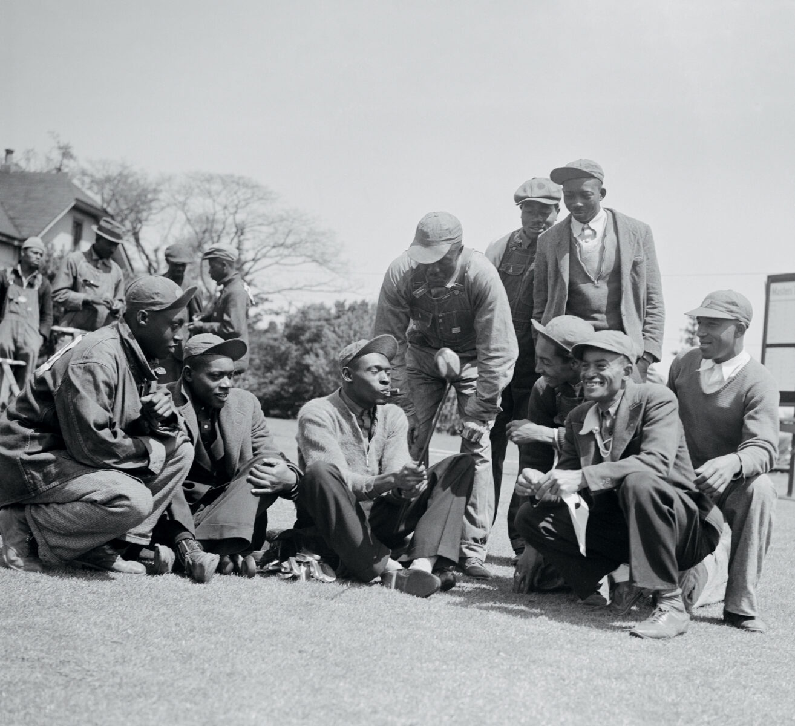
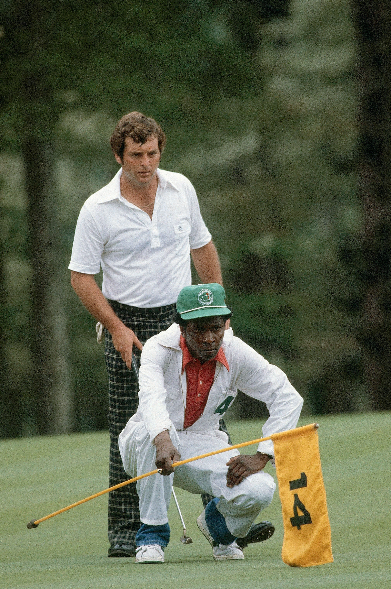

A TRADITION LIKE NO OTHER

Forgotten Kings of The Master's: How Augusta’s Black Caddies Changed the Game Forever
For almost fifty years, they carried the bags of golf legends but also masterminded victories from the tees to the holes. Then, with one decision, their lives shifted, and the legacy of their glory days went unheralded. Finally, that’s changing.
In a small cardroom at the back of a municipal golf course clubhouse in Augusta, Georgia, a handful of old men gather and reminisce.
Do you remember when…? How about that time…? What about when Willie Peterson wound up on the cover of Sports Illustrated back in seventy-two? Wasn’t that something?
All prompts, meant to bring back sweet memories. As they deal cards, the men talk about their golf games and trade good-natured jabs. They have known one another for more than sixty years, gave one another their nicknames.
Jim “Big Boy” Dent. Robert “Cigarette” Jones. Tommy “Burnt Biscuits” Bennett. Ike “Stabber” Choice.
As long as ailments don’t keep them confined to the house, they can be found here a couple of days a week, playing bid whist, ribbing one another, and recalling the days when they were part of Augusta National Golf Club’s all-Black caddie corps, which players were required to use during the annual spring Masters Tournament. From the competition’s inception in 1934, the caddies—born of Augusta and attuned to the land—could be a golfer’s secret weapon coming around Amen Corner or for surviving other notoriously tricky holes like No. 4, Flowering Crab Apple, or No. 10, Camellia.
These men were no beasts of burden, but talented prognosticators who turned a racist policy, rooted in subjugation, into a livelihood and a source of esteem—one that, ironically, first added diversity to the game of golf. Men like Willie Peterson, who was on the bag for five of Jack Nicklaus’s six Masters victories. Or Willie “Cemetery” Perteet, President Dwight D. Eisenhower’s personal caddie at Augusta National during the fifties. When the club bent to pressure in 1982 and dropped the ban on outside caddies, the change rocked the corps—many of its members, including those who counted on that crucial tournament paycheck to tide them over till the seasonal club reopened in October, had to look for other work.

In the four decades since, recognition for the pivotal part these men played in the game, until recently, scarcely existed. Even today, they aren’t heralded in the Augusta Museum of History, or mentioned in any of the historical milestones or records on the Masters’ website. But as their numbers dwindle—of the seventy-six caddies enlisted in 1982, only twenty or so are still living—they’re at long last beginning to be honored as what many of yesteryear’s golfers always knew them to be: the Pride of Augusta. An elite group of men who changed the game forever.
Roots on the Land: The Genius of Pappy Stokes
For thousands of years, the Savannah River’s overflowing waters dumped sand, silt, and detritus onto what would one day become Augusta, leaving fertile soil in their wake. By 1858, three hundred or so particularly arable acres landed in the hands of Louis Mathieu Edouard Berckmans and his son Prosper Jules Alphonse, Belgian immigrants and horticulturists with an interest in fruit and ornamental trees and shrubs. All told, the Berckmans cultivated more than three hundred varieties of peach trees alone and grew a million-plus fruit trees, turning Berckmans Nursery into the first large-scale plant source of its kind in the Southeast. A “horticulture Mecca,” heralded the American Pomological Society, “serving the entire nation.” Folks around Augusta simply called it “Fruitland.”
More than seventy years later, in 1931, the Georgia-born golf champion Bobby Jones and his partner, Clifford Roberts, a Wall Street investment banker, bought the nursery’s spread with plans to fashion a golf course from its landscape. Fruitland Manor became the clubhouse of the new Augusta National Golf Club. Many of the plant varieties the Berckmans developed and improved still grow on Augusta National’s meticulously curated grounds.
Immediately south, sandwiched between the Augusta Country Club and a campus of what is now Augusta University, lies Sand Hills, a Black neighborhood listed on the National Register of Historic Places where most of the caddies grew up. Much of their lives back then took place there “up on the hill,” three miles from downtown as the crow flies, looming hundreds of feet above the then flood-prone city. Close enough to the city’s seats of power that the residents could work in them, even if they could not walk through their front doors. Still, the community felt like “one big family,” recalls Jim Dent, filled with adults who cared about his well-being and corrected his wrongdoings. But “the grandfather of caddies” came from even closer: Fruitland itself.
Willie Lee Stokes was born in 1920 on a parcel of the property where his family tended cotton and corn. Eleven years later, in need of work, he headed to the golf course under construction, where men were hauling away trees and reshaping the terrain, making way for hazards and bunkers. “I remember cutting down trees on No. 10 and No. 11,” Stokes, who died in 2006, once told the Augusta Chronicle. When Augusta National opened, in 1932, Stokes became the personal caddie for Clifford Roberts, who dubbed him “Pappy.”
Stokes’s roots on the land gave him an advantage—he knew how to read the fairways and greens better than others. Take Rae’s Creek. Over the years, Augusta National has modified the course many times, but some water features are too ingrained to redirect. That was the secret of Rae’s, a ten-mile-long stream—up to sixty feet wide and four feet deep—that still cuts through the course. Surrounded by azaleas and dogwoods, the waterway is a major element of the infamous three-hole stretch, filled with hazards, called Amen Corner. Stokes understood that every putt would break toward Rae’s, the pull of gravity sending balls toward the lowest point on the property. Stokes also followed falling water: He became noted for studying how rain streamed across the greens, rendering the nuances of the topography visible.
Augusta National first put on what would come to be called the Masters Tournament in 1934 with its rule in place—attributed to Roberts—that golfers would always be white, and the caddies would always be Black. The segregated course had support from the top: From that same year until 1961, the Professional Golfers’ Association of America had a “Caucasian-only” clause in its bylaws, preventing non-whites from membership and thus from competing on the PGA Tour.
In 1938, the seventeen-year-old Stokes won his first Masters as a caddie for eventual Hall of Famer Henry Picard. He won again in 1948, with Claude Harmon; in 1951 and 1953, with the legendary Ben Hogan; and in 1956, with Jack Burke Jr. Stokes ties with latter-day caddies Steve Williams and Willie Peterson for the greatest number of Masters wins (five), but he remains the only one to do it with four different golfers.

Stokes decided to teach the Black youth in Sand Hills what he knew. Caddying, after all, could provide consistent income and food on the table, even if most chalked the job up as low-skill menial labor, in the realm of domestics and servants. (Back then, even if a caddie had a better assessment of the lay of the land, some golfers only wanted someone to carry their heavy bags over miles of terrain. In those instances, there were just three rules: Show up, keep up, and shut up.) By the time the second generation of caddies was born in the late thirties and early forties, interested boys could attend Pappy Stokes’s Saturday caddie school to learn how to read the greens and anticipate the forces at play in golf. Stokes “was like the godfather of us young kids,” Robert Jones says. “Knew that golf course like the back of his hand.”
“We were the best caddies in the world, and we challenged each other over who could read the greens the best, who could pull the best clubs.” -Jariah Beard
A Changing Era and a Lasting Legacy
In later decades, as golf modernized and television networks broadcast more tournaments, the prize purse swelled, and players began to build personal teams with nutritionists, chefs, psychologists, swing coaches, and caddies who followed them everywhere. Many began to feel that using a local caddie at the Masters instead of someone they collaborated with year-round worked to their detriment. Those complaints came to a head at the 1982 tournament, after a heavy spring rain caused a delay of the third round until Sunday morning. Confusion about the start time left some players without their assigned caddie. One golfer even sent his wife out to shag balls for him.

The PGA players asked Augusta National’s chairman at the time, Hord Hardin, to lift the ban on outside caddies. Hardin, at last, complied.
The next year, only eighteen of the tournament’s eighty-two players used Augusta National’s Black caddies. Not only that, but white caddies, now eager and able to work at the country’s most prestigious course, began to take spots in the course’s corps.
“Money,” Robert Jones says, “changed the world.”